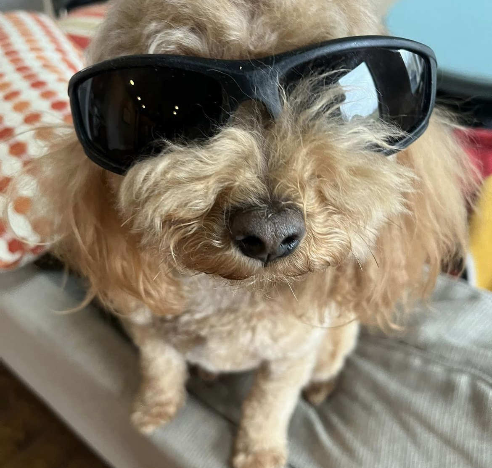

My name is Dylan and I am from Louisville, Kentucky.
Here's a Picture of my dog:

Some things I enjoy!
Video Games
- Arc Raiders
- Rocket League
- Any sports game
Video games are a great way for me to wind down and enjoy myself. I have played many different games over my life, but these are the current favorites. I also use it as a way to connect with friends I dont see much anymore.
Sports
- Soccer
- Football
- Golf
I have played sports my entire life, and they are a big part of who I am today. I love being active and still play these whenever I can. I recently picked up golf but am excited to improve at it.
Music
- Kanye West
- Tame Impala
- Frank Ocean
Music is something I listen to everyday. I use it as a way to focus or to enjoy myself. I am always looking to listen to new stuff and broaden the genres I listen to.